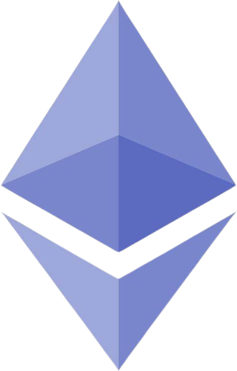

Bitcoin
Summary
The first ever cryptocurrency that is decentralized globally as called Bitcoin. It was launched in 2009 and relies on the use of cryptography and peer-to-peer networking to enable secure online transactions without necessarily involving intermediaries such as banks. Transactions are openly recorded on a transparent and unchanging ledger termed blockchain. The value of Bitcoins is determined by market dynamics, making it an extremely volatile currency.
Ethereum
Summary
Ethereum is a decentralized platform devoid of central banks. It has its own digital currency called Ether (ETH) that facilitates transactions and also accommodates “smart contracts” which are self-executed agreements without requiring intermediaries. Thus, its application can be across the broad spectrum including but not limited to finance or even supply chain management among others. Notwithstanding the fluctuating price of Ether, such online transactions security approach is considered as one of Ethereum’s unique features for programmable contracts.